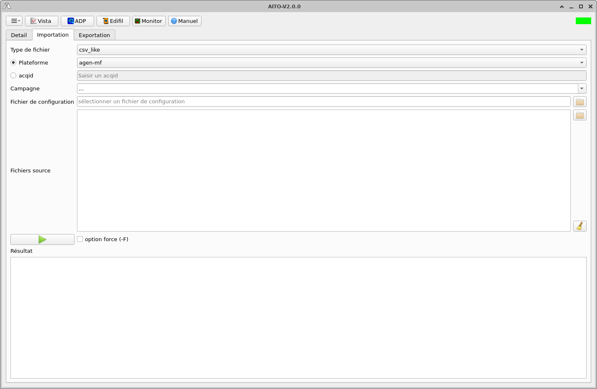

* Pour rechercher des fichiers, utiliser les boutons
 .
.* Pour vider la liste des fichiers source, utiliser le bouton
 .
.

Pour importer des données dans AIDA
Les données sont importées dans AIDA grâce à mtv.py
(voir document de référence AIDA : user.pdf)
..